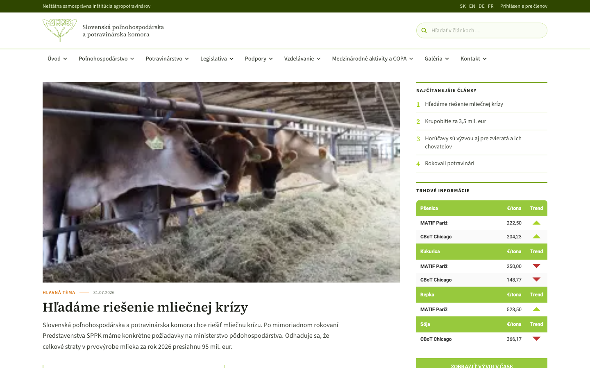
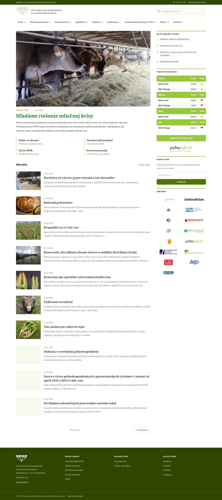

2026 · Client rebuild
SPPK
A rebuild of the Slovak Agriculture and Food Chamber's site — a member institution that publishes constantly: policy, legislation, market prices, sector news. The problem was never a shortage of content. It was that nothing on the page told you what mattered today.

Editing, not decorating
An organisation like this wants everything on the homepage, because every department believes its section is the important one. The design's job was to impose an order without removing anything.
- One lead story, full width. A single photograph and headline take the top of the page. Everything else is subordinate to it by size alone.
- The right rail is a ranking. Most-read articles are numbered 1–4 in green. Rather than an editor guessing, readership decides the order.
- Market prices as a distinct block. Commodity data is the reason a lot of members visit at all, so it sits in its own bordered card rather than being buried in a news feed.
- Green as institutional, not decorative. The chamber's green appears on rules, numerals and buttons — structural elements — and never as a background wash.
- Serif headlines, sans body. Standard newspaper logic: the serif signals editorial weight, the sans keeps dense body copy readable.

What the navigation revealed
The eight top-level menu items — agriculture, food, legislation, subsidies, education, international, gallery, contact — are not the site's real structure; they are the organisation's internal departments. Mapping the menu against what actually gets published showed the two had drifted apart, which is the finding that shaped the whole information architecture.
Client work. Screenshots and write-up only — the site's content, photography and branding belong to the client and are not republished here.